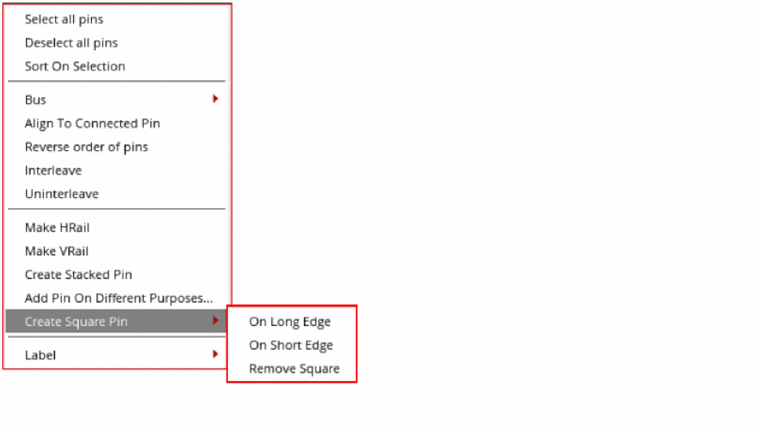
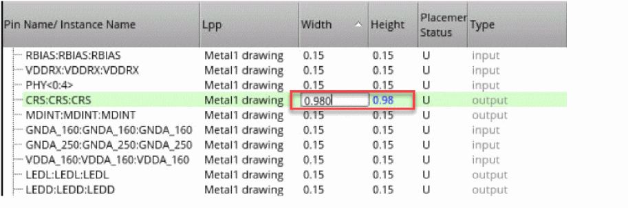
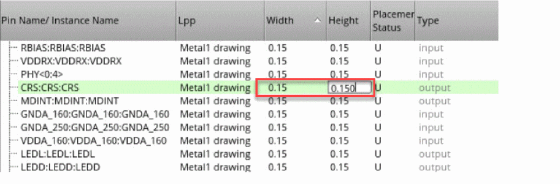

Creating Square and Rectangular Pins in the Pin Tool
To create a square pin from a rectangular pin:
- Choose Plan – Pin Planning – Pin Tool. The Pin Browser is displayed.
- Select the required rectangular pin in the Pin Browser.
-
Right-click and choose Create Square Pin.
 -
Choose one of the following options:
-
On Long Edge: Creates a square boundary with the longer edge as the side. The shorter edge is resized to match the longer edge.
In the following example, the initial width and height of a pin are0.15and0.98, respectively. On selecting On Long Edge, the shorter edge is resized to0.98to create a square pin. -
On Short Edge: Creates a square boundary with the shorter edge as the side. The longer edge is resized to match the shorter edge.
In the following example, the initial width and height of a pin are0.15and0.98, respectively. On selecting On Short Edge, the longer edge is resized to0.15to create a square pin. - Remove square: Converts the pin into a rectangular pin without modifying the width and height values. You can edit the Height based on your requirement.
-
On Long Edge: Creates a square boundary with the longer edge as the side. The shorter edge is resized to match the longer edge.
- Click Apply to reflect the changes in the layout canvas.
For rectangular pins, both Width and Height are editable, whereas for square pins only Width is editable.
Related Topics
Selecting Pins and Editing Pin Attributes in the Pin Tool
Creating Pins from Net Shapes in the Pin Tool
Return to top